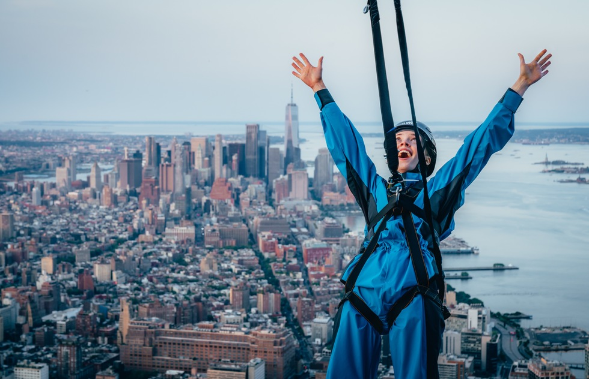
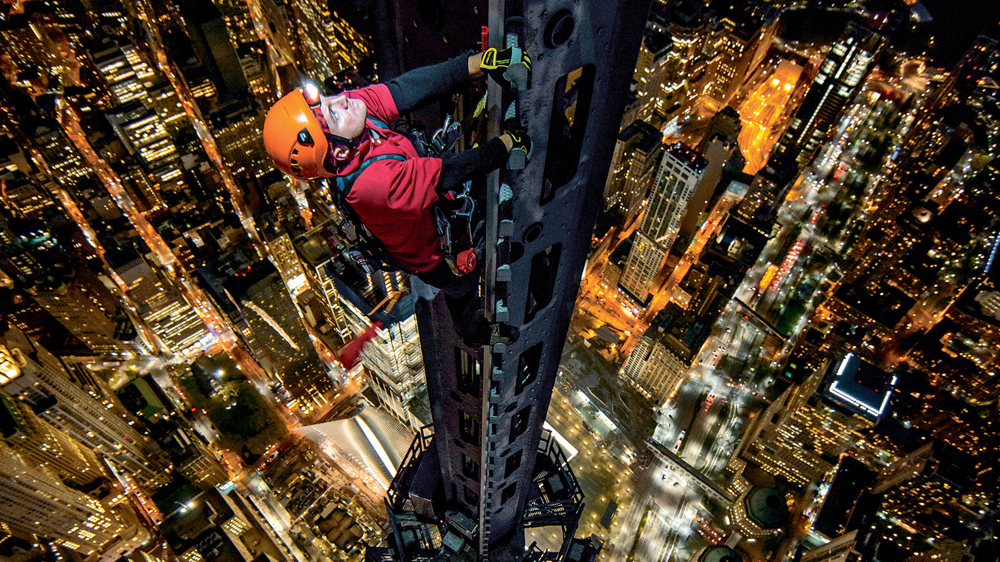
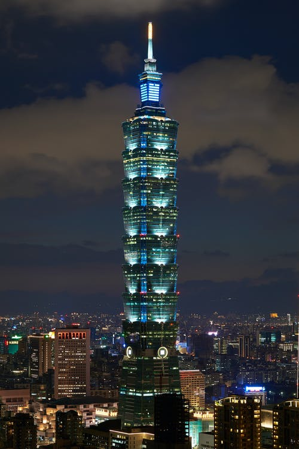
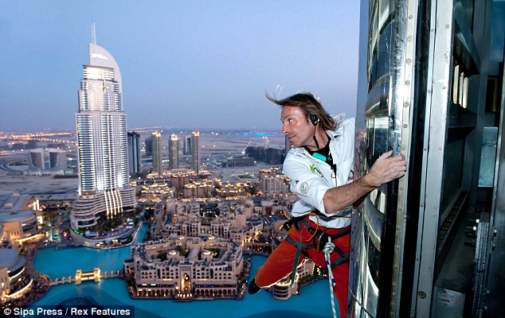
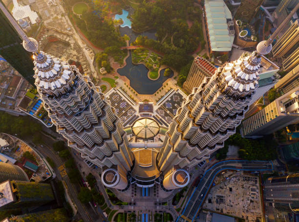
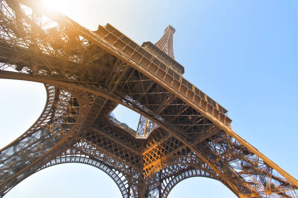

"Joining The SkyScrapers has literally flipped my boring life upside down. Before I was sad and stuck in a rut. Now, I feel like my life has been infused with energy and purpose again, and I've made so many new friends too!"
The Most Thrilling Club Ever

Every week, SkyScrapers prowl urban landscapes in the search of the next skyscraper to climb. Since our founding in 2006, we have completed over 2500 climbs on some of the highest buildings in the world. We are a tight-knit community held together by love, adrenaline, and our belief that life is too short to shy away from the things that scare us.
Featured Climbs

Man on the spire: Jimmy Chin, a SkyScraper veteran, climbs the One World Trade Center June 2nd, 2016. (photo credit New York Times)




Meet Our Leaders!
Friedrich Abioye
Founder
Friedrich founded The SkyScrapers because he realized life as a building scaler can be lonely at times. When Friedrich is not climbing, you can find him reading books, watching trashy rom-coms, and spending time with his three young and rambunctious children.
Zyaire Liu
Cofounder
Between Friedrich and Zyaire, Zyaire is definitely the more extroverted one. He helps the club connect with people and organizations from across the world. Zyaire loves raves, Post Malone concerts, and beating everyone at Fantasy Football.
Maybelline Richmond
Trainer
Maybelline has over 15 years of experience climbing skyscrapers, bridges, and mountains and 10 years of experience teaching others to do the same. She is obsessed with dogs, loves traveling, and has a serious sweet tooth.
Next Meetup
Transamerica Pyramid
600 Montgomery Street, San Francisco